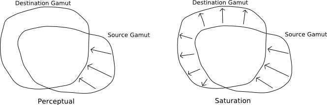

About ICC profiles and Gamut Mapping
How ICC profiles support different intents
cLUT (Color Lookup Table) based ICC profiles support multiple intents by having a table for
each intent. In a typical device cLUT profile, there are up to 6
cLUT's, three for input (AtoB tables, that convert from device space
to PCS (Profile connection space)), and three for output (BtoA
tables, that convert from PCS to device space). The tables allow the
use of different color transforms, each transform being tailored for
a different effect:
AtoB0, BtoA0: Perceptual
AtoB1, BtoA1: Colorimetric
AtoB2, BtoA2: Saturation
The colorimetric intent is meant to convey the exact device color
behaviour, without any gamut mapping. Typically it is used to store
the devices behaviour (characterization), and is also used where
exact color reproduction is required, such as for proofing. The
Colorimetric tables double up for both relative colorimetric and
absolute colorimetric with the application of a white point
restoration.
The Perceptual and Saturation tables are meant to contain gamut
mapping combined with the device characterization. The allowance for
this in both the AtoB direction, as well as the BtoA direction
permits a profile to gamut map from the device gamut to some
intermediate gamut, and then from the intermediate gamut to the
device gamut.
[Note that Shaper/Matrix profiles are always Colorimetric intent,
since there is only a single transformation, and it does not have
the necessary flexibility to accommodate gamut mapping.]
ICC Version 2 behaviour
Apart from defining the general purpose of the different tables, the
ICC Version 2 specification doesn't specify exactly how they are to
achieve this, so it is up to the profile maker to make a choice in
this regard. There is no common gamut boundary specified for the
PCS, and such an approach limits the achievable intents in any case
(see ICC Version 4 behaviour for an explanation why).
What I've chosen to do with Argyll profiles, is to make all the AtoB
tables the same as colorimetric. This means that the conversion used
for the source profile is always colorimetric, and also means that
the source gamut seen by the destination profile is the source
colorspace gamut. This means that the gamut mapping is done solely
in the BtoA tables, and that their task is to map the source
colorspace gamut to the destination colorspace gamut. So to
construct the perceptual and saturation intent mapping tables, a
source profile or source gamut needs to be specified, so that a
gamut mapping can be constructed.
The advantages of this approach is that the behaviour is precisely
defined, a full range of gamut mapping options is available, and
compatibility with matrix profiles (which do not have gamut mapping
transforms) and other foreign profiles can be assured, by simply
using such profiles as colorimetric sources. The main disadvantage
is that the gamut mapping will only operate exactly as intended when
the profile is linked with the source profile it was setup for. This
is really a fundamental limitation of the idea of having
pre-computed gamut mapping color transforms, that the ICC profile
format was intended to support.
Some non-Argyll profiles have gamut mapping transforms in their
Perceptual and Saturation A2B tables, and this means that the
apparent gamut of a source through these tables may be different to
the actual device gamut. To accommodate using these profiles with
CMM's (Color Management Modules) that do not permit the separate
choice of intent tables for the source and destination profiles,
Argyll will by default use the gamut defined by the source profile
perceptual table to create the gamut mapping of the destination
perceptual table, and the source saturation table to make the
destination saturation table. Note that this can affect the exact
nature of the gamut mapping, the distortion of the source gamut
changing the apparent relationship between it and the destination
gamut - see "ICC Version 4 behavior" for an illustration of the kind
of changes this causes. [This default can be overridden though using
the colprof -nP and -nS flags.]
ICC Version 4 behaviour
(Note that Argyll does not currently support ICC V4)
By default, ICC Version 4 profile operates similarly to the ICC V2
profile in regard to gamut mapping, with the exception that a
minimally specified reference medium and reference viewing
conditions are introduced for perceptual (and presumably saturation)
tables, allowing at least the luminance range to have a well defined
behavior when mixing and matching the perceptual A2B and B2A tables
of different profiles. A slight adjustment was made to the permitted
tag contents, to allow things like Display profiles to contain the
full range of AtoB and BtoA tables, so that they could also be gamut
mapped. An optional part of ICCV4, introduces a more comprehensively
specified Profile Reference Medium
Gamut (PRMG) as an intermediate gamut boundary between the
source colorspace, and the destination colorspace. If this option is
used, then an additional tag in the ICCV4 profile indicates that
this is the case. This then solves the problem of the gamut mapping
having to know the source and destination gamuts to operate.
Instead, the gamut mapping is split into two parts, the first where
the source gamut to RMG is done by the AtoB tables, and then the RMG
to destination gamut is done by the BtoA tables. Profiles can
therefore be mix and matches, while retaining true gamut mapping.
This approach has a number of drawbacks though. One is that the
colors get gamut mapped twice. Gamut mapping is sometimes not very
precise, and the geometry of the transforms may not cancel out,
especially since different profile vendors may choose different
algorithms in their gamut mapping. By "cancel out", I mean that even
if you were linking the same source colorspace to the same
destination colorspace, the gamut may be expanded (say) in the
process of mapping to the PRMG, and then compressed again in mapping
from the RMG to the device space, and these expansions and
compressions may not quite match. Given that the PRMG is a
relatively large gamut, larger than many real devices actual
behavior, this sort of expansion and re-compression will be the
normal thing.
The chief drawback, is that only one (non colorimetric) intent can
really be supported, that of saturation.
The typically expected behavior of perceptual intent gamut mapping,
is to compress any areas of the source gamut that lie outside the
destination gamut, but for areas that fall within the destination
gamut, change them as little as possible, consistent with keeping
smooth and proportional with respect to the compressed colors. This
preserves the source "look" as much as possible, while ensuring that
out of gamut colors are smoothly brought within the destination
gamut.
Typical behavior of a saturation intent, is (at least), to not only
compress out of gamut source colors to fit within the destination,
but to expand any source boundary that falls within the destination
gamut outwards match the destination gamut. Some practical
saturation gamut mappings may go further than this, and expand a
little beyond the destination gamut to ensure fully saturated
boundary colors, and also enhance the saturation of all colors
mapped through it.
By mapping the source gamut to the RMG in the A2B, all
information about what areas of the source gamut are inside or
outside of the destination gamut are lost, so the destination gamut
mapping can not known which colors may be left unchanged, and which
really need compressing. All it can do is map the RMG to match the
destination gamut, thereby effecting a saturation style intent.
If the source was not expanded out to fill the RMG in some area by
the A2B, then the resulting output will be over compressed and end
up looking dull, because the B2A table has no choice but assume that
there may be colors that do fill the RMG.
Once again, this is all a fundamental limitation of using
pre-computed gamut mappings. The only effective way of overcoming
such limitations is to move to a more active color management
architecture, in which gamut mappings are computed at link time, to
accommodate the actual source and destination gamuts.
